Conceito — a alça de Henle e seus diuréticos, ilustrado
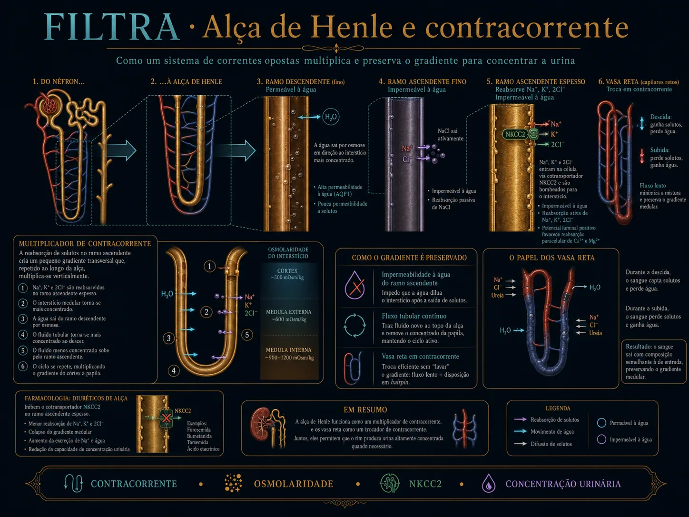
A alça cria a pilha que defende a água — homeostasia. O ramo
espesso bombeia NaCl e ergue o gradiente corticomedular; com ele (e o ADH no ducto, M8) o rim concentra a
urina. As Fig. 1–13 voltam no Caso, na Trilha e na Avaliação (algumas reaparecem nos exercícios). Atribuição
em CREDITS.md (em curadoria).
1. Os dois ramos da alça
O fino descendente é permeável à água (água sai → concentra o conteúdo); o espesso ascendente é impermeável à água e bombeia NaCl (dilui o conteúdo).
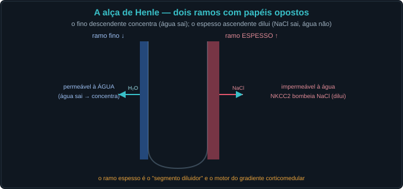

2. O NKCC2 e o segmento diluidor
No ramo espesso, o NKCC2 reabsorve Na⁺/K⁺/2Cl⁻ — é o alvo do diurético de alça. Como a água não acompanha, o fluido que segue fica diluído (o "segmento diluidor").
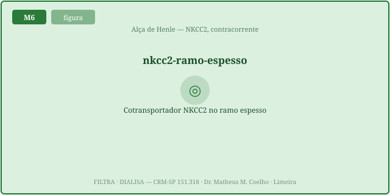
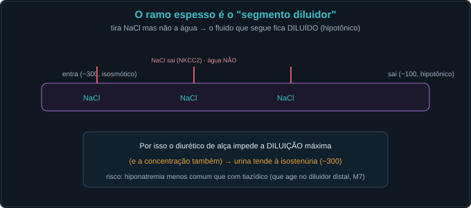
3. O gradiente corticomedular — o multiplicador e a vasa recta
O passo único do TAL (~200 mOsm) é "multiplicado" pelo fluxo em alça até 1200 mOsm na papila. A vasa recta troca em contracorrente e preserva a pilha.
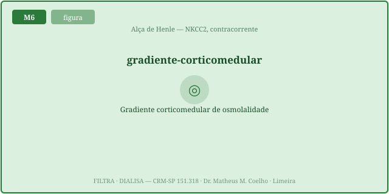
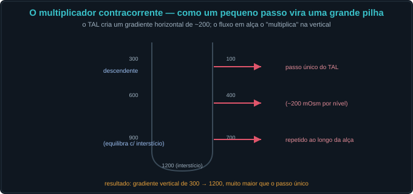
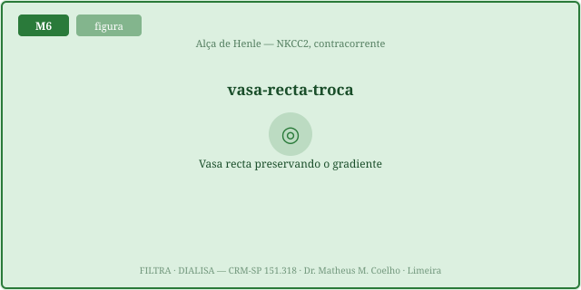
4. Os diuréticos de alça — sítio, efeitos e potência
Bloqueiam o NKCC2: natriurese potente (a maior dos diuréticos), com perda de K⁺, H⁺, Ca²⁺ e Mg²⁺. Furosemida 20–80 mg · bumetanida 0,5–2 mg (≈40×) · torasemida 10–20 mg.

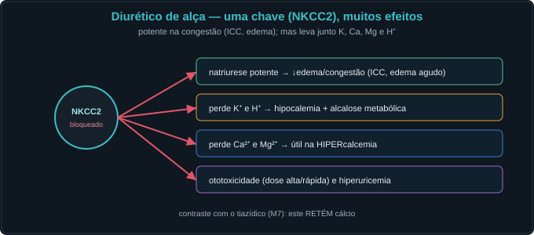
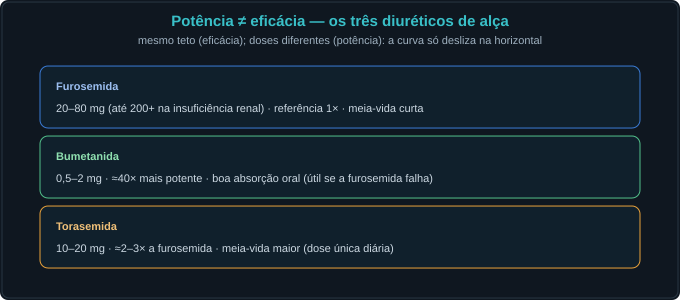
5. A dose-resposta — teto, braking e o uso
A curva tem um limiar (subdose não faz nada) e um teto alto; o uso crônico desloca a curva (braking). O uso central é a congestão (ICC, edema).
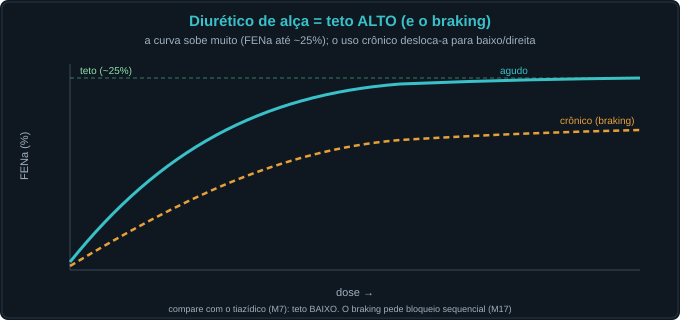
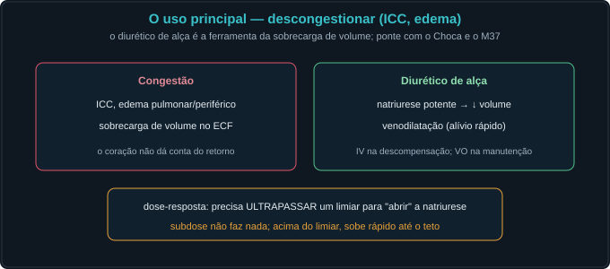
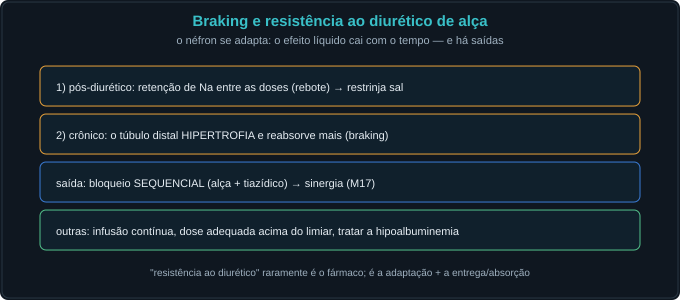
Caso — oito atos, decida antes de revelar
Homem, ICC descompensada, edema de membros e dispneia. Vamos descongestionar pela alça.
Trilha socrática — treze perguntas que constroem o conceito
1. O que faz o ramo fino descendente?
É permeável à água: a água sai para o interstício hipertônico e o conteúdo se concentra ao descer.
2. E o ramo espesso ascendente?
É impermeável à água e bombeia NaCl (NKCC2) — o "segmento diluidor"; o fluido sai hipotônico.
3. O que é o NKCC2?
O cotransportador Na⁺/K⁺/2Cl⁻ apical do ramo espesso — o alvo dos diuréticos de alça.
4. Por que a alça perde Ca²⁺ e Mg²⁺?
O K⁺ reciclado deixa a luz positiva, o que puxa Ca²⁺ e Mg²⁺ pela via paracelular. Bloquear o NKCC2 tira essa força → perde Ca/Mg.
5. Como nasce o gradiente corticomedular?
Pelo multiplicador contracorrente: o passo do TAL (~200) é multiplicado pelo fluxo em alça até ~1200 mOsm na papila.
6. Para que serve o gradiente?
É a pilha osmótica que o ADH usa no ducto coletor (M8) para reabsorver água e concentrar a urina.
7. O que faz a vasa recta?
Troca contracorrente nos capilares medulares → preserva o gradiente (evita o washout).
8. O que o diurético de alça faz ao gradiente?
Abole-o (o TAL para) → isostenúria: a urina não concentra nem dilui ao máximo.
9. Por que o teto é "alto"?
O NKCC2 fica logo após o proximal e antes do ajuste fino: bloqueá-lo entrega muito Na adiante → FENa pode chegar a ~25%.
10. Potência × eficácia entre eles?
Mesma eficácia (teto); bumetanida ≈40× mais potente (dose menor), torasemida com meia-vida maior. A curva só desliza na horizontal.
11. O que é o braking?
A adaptação ao uso crônico: rebote pós-diurético + hipertrofia distal → o efeito líquido cai. Daí a "resistência ao diurético".
12. Como vencer a resistência?
Dose acima do limiar/IV contínua, restrição de sal e bloqueio sequencial (associar tiazídico) → sinergia (M17).
13. Em que sentido isto é homeostasia?
A alça constrói a reserva osmótica para defender a ÁGUA; o diurético reescreve essa defesa para tirar volume na congestão.
Instrumento — a curva dose-resposta (FENa × dose)
Os controles do Lab alimentam esta curva. Veja o limiar (subdose não faz nada), o teto alto e, ligando "crônico", o deslocamento do braking.
Laboratório — a alça e seus diuréticos (dose computada)
| Variável | Atual | Comentário |
|---|---|---|
| Atividade do NKCC2 | — | 100% = sem fármaco |
| Gradiente corticomedular (mOsm) | — | 300 → 1200 |
| FENa (%) | — | teto ~25% |
| Osmolalidade urinária (mOsm) | — | isostenúria ~300 |
| Concentra a urina? | — | precisa do gradiente |
| Perde Ca²⁺? | — | ≠ tiazídico |
| Padrão | — | — |